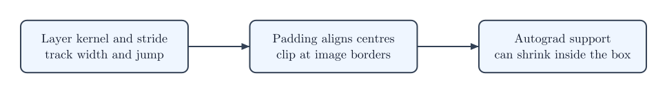
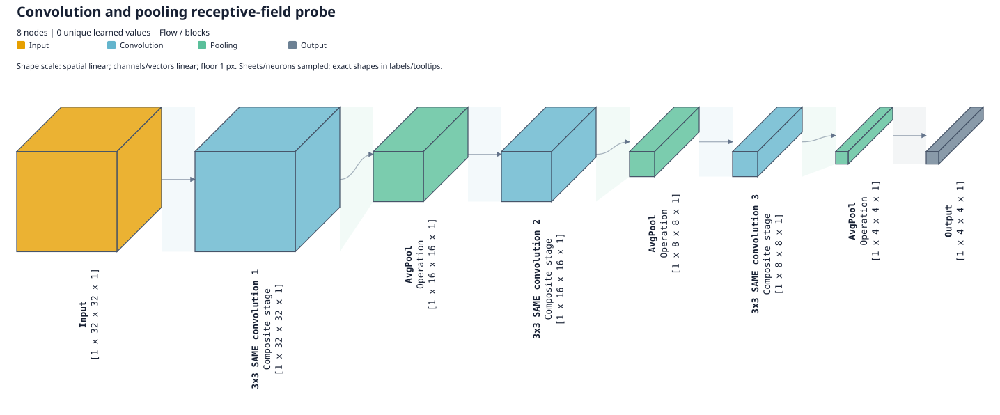
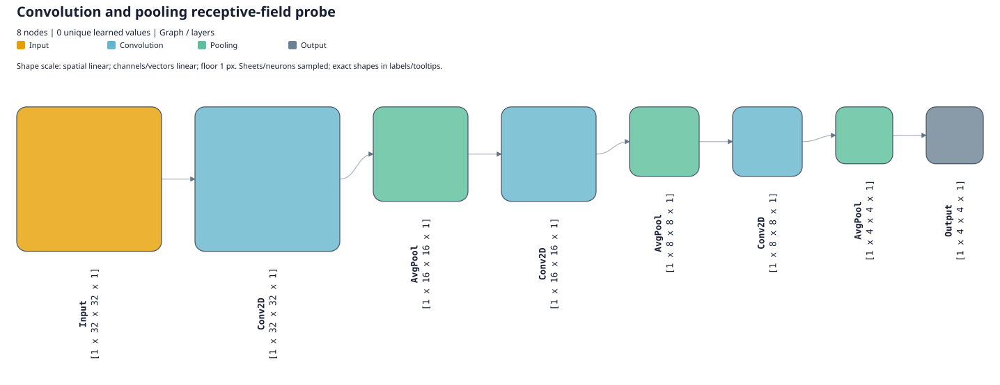
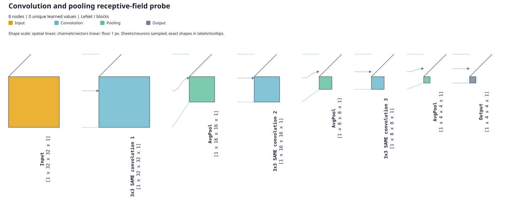
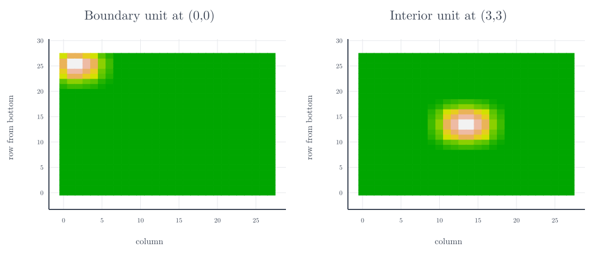
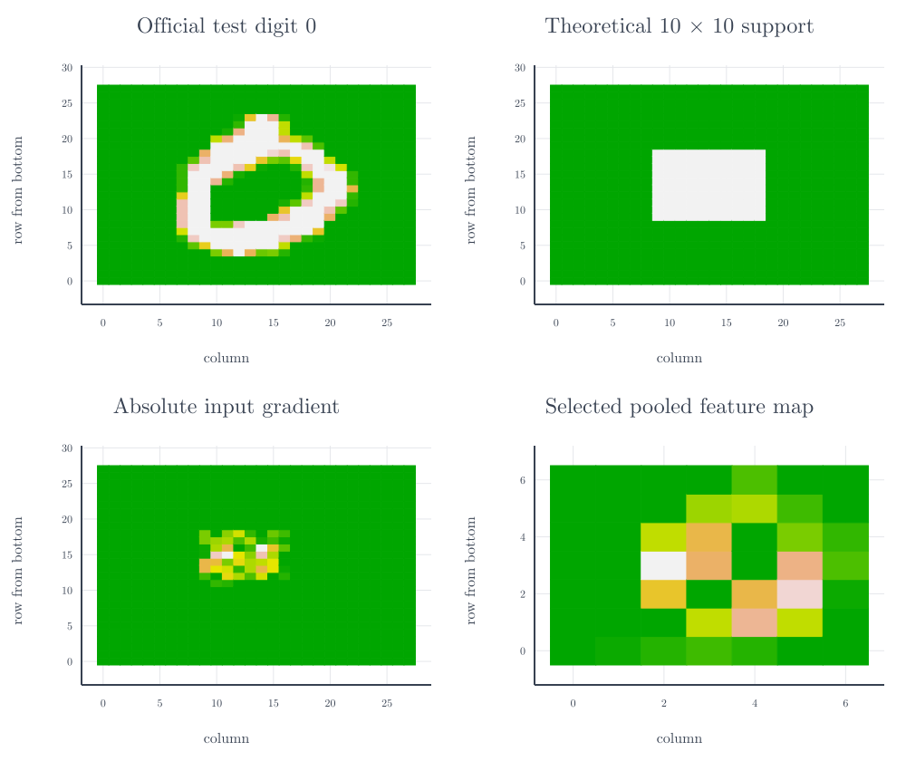

Receptive Fields: Enclosing Boxes and Actual Derivatives
Abstract
A local CNN feature depends on only part of an image, but its architectural receptive box and its active input derivatives are different objects. We track size, jump and centre through two convolution/pooling blocks and verify the predicted support with positive linear filters.
Source example: examples/cpp/source/nn/1_convolutional_neural_networks/1.1_fundamentals/receptive_fields.cpp.
The method
Starting with receptive width r=1, input jump j=1 and first pixel centre a=.5, one layer gives
For SAME 3×3 convolution, 2×2 VALID pooling, then the same pair, widths are 3,4,8,10; jumps are 1,2,2,4 and first centres .5,1,1,2. Output index u has centre a+uj. Pixels are centred at integer+.5, so a width-ten interior unit centred at 14 covers indices 9 through 18. The box clips at image boundaries. All-positive filters and average pooling activate every reachable path; ReLU, signed cancellation and max-pooling may reduce a trained unit's support. Geometry tracking is O(layers); an input derivative costs one backward evaluation.
The concept diagram below is drawn by dm::graphics::Diagram. Its editable C++
source is the complete block below; regeneration uses the same datamunge toolchain
as the numerical examples. Exports consume the saved local SVG.
#include <dm/dm.hpp>
int main() {
std::filesystem::create_directories("build");
dm::graphics::Diagram diagram;
diagram.node("n0", {0.0, 0}, "Layer kernel and stride\ntrack width and jump");
diagram.node("n1", {5.2, 0}, "Padding aligns centres\nclip at image borders");
diagram.node("n2", {10.4, 0}, "Autograd support\ncan shrink inside the box");
diagram.edge("n0", "n1").edge("n1", "n2");
diagram.save_svg("build/receptive_fields_concept.svg");
}
Simple examples
The four-stage width recursion gives 3,4,8,10. Two chosen output units test both interior and boundary clipping.
Executed architecture diagram
The diagram below is generated by this model's forward function through
nn::Module::plot. Each style runs a zero-valued shape probe in inference mode;
it does not fit parameters or load a trained checkpoint. Shapes include the
example batch, and learned-value counts deduplicate shared tensors. The flow and LeNet views use named composite blocks; the graph view shows
functional layers and their actual branches. ModelPlotDetail::Operations
expands both into tensor primitives.
All views run left to right with node labels rotated 90 degrees counterclockwise.
Colors identify layer categories and are explained by the legend. The settings below
control fill/edge opacity, category colors, column/lane spacing, label content, font
size and wrapping. Flow labels show full layer metadata; graph and LeNet labels show
names and exact shapes. All three views use shared linear shape scales: face axes
follow spatial dimensions, depth follows channel count, and vector height follows
feature count. Batch size is excluded from geometry. A one-pixel visibility floor
keeps very small dimensions visible; it is disclosed in each figure. The scales can
instead use SquareRoot or Logarithmic compression explicitly. LeNet sheet counts
and graph neuron markers are bounded samples; their envelopes follow the shape scales.
Graph neuron bundles are drawn only for actual dense connections. Dots mark omitted
units. Wide diagrams can be scrolled at native size on the website.
Arrows follow the executed differentiable path; constants and deliberately
detached paths are not expanded. The visual conventions are inspired by
[VisualTorch's examples](https://visualtorch.readthedocs.io/en/latest/usage_examples/index.html).
#include <dm/dm.hpp>
int main() {
namespace n = dm::nn;
n::set_num_threads(2);
std::filesystem::create_directories("build");
n::Module model(
[&](const n::Tensor& image) {
auto h = image;
for (int block = 0; block < 3; ++block) {
const auto c = n::conv2d(h, n::ones({3, 3, 1, 1}));
n::model_stage("3x3 SAME convolution " + std::to_string(block + 1), h, c);
h = n::avg_pool2d(c, 2, 2);
}
return h;
},
"Convolution and pooling receptive-field probe");
for (const auto style :
{n::ModelPlotStyle::Graph, n::ModelPlotStyle::LeNet, n::ModelPlotStyle::Flow}) {
n::ModelPlotOptions options;
options.style = style;
options.opacity = .8;
options.edge_opacity = .55;
options.funnel_opacity = .08;
options.colors.convolution = "#64B5CD";
options.colors.pooling = "#5ABF9A";
options.colors.dense = "#748BCB";
options.spacing.layer = 48;
options.spacing.lane = 48;
options.labels.type = style == n::ModelPlotStyle::Flow ? n::ModelPlotLabel::Full
: n::ModelPlotLabel::NameAndShape;
options.labels.size = 13;
options.labels.wrap = 28;
options.sizing.spatial_scale = n::ModelPlotScale::Linear;
options.sizing.channel_scale = n::ModelPlotScale::Linear;
options.sizing.spatial_size = 144;
options.sizing.channel_size = 64;
options.sizing.minimum_extent = 1;
options.sizing.max_planes = 6;
options.detail =
style == n::ModelPlotStyle::Graph ? n::ModelPlotDetail::Layers : n::ModelPlotDetail::Blocks;
const auto diagram = model.plot(n::zeros({1, 32, 32, 1}), options);
std::string output = "build/receptive_fields_architecture.svg";
if (style != n::ModelPlotStyle::Flow)
output.insert(output.size() - 4, style == n::ModelPlotStyle::Graph ? "_graph" : "_lenet");
diagram.save_svg(output);
const auto label = style == n::ModelPlotStyle::Graph ? "Graph / layers"
: style == n::ModelPlotStyle::LeNet ? "LeNet / blocks"
: "Flow / blocks";
std::print(
"{}: {} nodes, {} distinct learned values.\n",
label,
diagram.nodes().size(),
diagram.parameter_count());
}
}Graph / layers: 8 nodes, 0 distinct learned values. LeNet / blocks: 8 nodes, 0 distinct learned values. Flow / blocks: 8 nodes, 0 distinct learned values.

Graph and LeNet views


#include <dm/dm.hpp>
int main() {
namespace n = dm::nn;
const auto type = n::DType::Float64;
const auto fields = n::receptive_fields({{3, 1, 1}, {2, 2, 1}, {3, 1, 1}, {2, 2, 1}});
auto layout = dm::graphics::RLayout::create(1, 2);
for (int coordinate : {0, 3}) {
auto x = n::zeros({1, 28, 28, 1}, type).requires_grad_(), h = x;
for (int stage = 0; stage < 2; ++stage) {
h = n::conv2d(h, n::ones({3, 3, 1, 1}, type));
h = n::avg_pool2d(h, 2, 2);
}
const auto selected = n::sum(n::slice(h, {0, coordinate, coordinate, 0}, {1, 1, 1, 1}));
const auto gradient = n::grad(selected, {x})[0].reshape({28, 28});
const double centre = 2 + 4 * coordinate;
int active = 0;
for (int y = 0; y < 28; ++y)
for (int column = 0; column < 28; ++column) {
const bool inside = y + .5 >= centre - 5 && y + .5 < centre + 5 &&
column + .5 >= centre - 5 && column + .5 < centre + 5;
if ((gradient.at({y, column}) > 0) != inside)
return 1;
active += inside;
}
layout.add(n::plot_tensor_map(gradient).title(coordinate == 0 ? "Boundary unit at (0,0)"
: "Interior unit at (3,3)"));
std::print("Output index {}; centre {}; active input pixels {}.\n", coordinate, centre,
active);
}
for (const auto &f : fields)
std::print("Width {}; jump {}.\n", f.size, f.jump);
if (fields.back().size != 10 || fields.back().jump != 4)
return 1;
std::filesystem::create_directories("build");
layout.size(1100, 470).fit_panels().save_svg("build/receptive_fields_support.svg");
}Output index 0; centre 2; active input pixels 49. Output index 3; centre 14; active input pixels 100. Width 3; jump 1. Width 4; jump 2. Width 8; jump 2. Width 10; jump 4.

Checking the theory
A finite difference probes an inside pixel, while a far-away perturbation must leave the selected feature unchanged.
#include <dm/dm.hpp>
int main() {
namespace n = dm::nn;
const auto type = n::DType::Float64;
auto x = n::ones({1, 28, 28, 1}, type).requires_grad_();
auto feature = [](const n::Tensor &input) {
auto h = input;
for (int stage = 0; stage < 2; ++stage) {
h = n::conv2d(h, n::ones({3, 3, 1, 1}, input.dtype()));
h = n::avg_pool2d(h, 2, 2);
}
return n::sum(n::slice(h, {0, 3, 3, 0}, {1, 1, 1, 1}));
};
const auto gradient = n::grad(feature(x), {x})[0];
auto values = x.to_vector<double>();
const double eps = 1e-5;
values[14 * 28 + 14] += eps;
const double plus = feature(n::from_vector(values, x.shape())).item();
values[14 * 28 + 14] -= 2 * eps;
const double minus = feature(n::from_vector(values, x.shape())).item();
const double numeric = (plus - minus) / (2 * eps), analytic = gradient.at({0, 14, 14, 0});
values = x.to_vector<double>();
values[27 * 28 + 27] += 100;
const double outside =
std::abs(feature(n::from_vector(values, x.shape())).item() - feature(x).item());
if (std::abs(numeric - analytic) > 1e-8 || outside != 0)
return 1;
std::print("Inside derivative: autograd {:.9f}, finite difference {:.9f}; outside "
"perturbation effect {}.\n",
analytic, numeric, outside);
}Inside derivative: autograd 2.250000000, finite difference 2.250000000; outside perturbation effect 0.
Fresh artifact and held-out checks
The views below are regenerated from the executed programs above. Confusion matrices use the selected checkpoint and original held-out rows. Paired ablations retain each seed and policy separately; they do not pool the same test observations into one artificial sample.
#include <dm/dm.hpp>
int main(){std::filesystem::create_directories("build");std::filesystem::copy_file("build/receptive_fields_architecture_graph.svg","build/export_receptive_fields_architecture_graph.svg",std::filesystem::copy_options::overwrite_existing);}#include <dm/dm.hpp>
int main(){std::filesystem::create_directories("build");std::filesystem::copy_file("build/receptive_fields_architecture_lenet.svg","build/export_receptive_fields_architecture_lenet.svg",std::filesystem::copy_options::overwrite_existing);}Trained receptive field on official MNIST
Run the CNN training report first to create the selected checkpoint. This program restores it and verifies accuracy on the full official test split. It then takes the first test example of each digit. On the digit zero, select the strongest active channel at the centre of the second pooling layer and differentiate that scalar with respect to its input pixels.
#include <dm/dm.hpp>
int main() {
namespace n=dm::nn;
n::set_num_threads(4);
const auto data=n::load_mnist(dm::datasets::fetch("mnist"),"test");
if(data.images.shape()!=n::Shape{10000,28,28,1}||data.labels.shape()!=n::Shape{10000})
throw std::runtime_error("Expected the original MNIST test split");
n::ParameterStore store(17);
auto network=[&](const n::Tensor& images){return n::models::MnistCnn(store,images);};
const auto checkpoint="build/cnn_mnist_best.npz";
if(!std::filesystem::exists(checkpoint))
throw std::runtime_error("Run cnn_mnist.mepml to generate the checkpoint");
std::array<std::int64_t,10> first;
first.fill(-1);
n::models::MnistCnnOutputs stage;
double accuracy=0.;
{
n::NoGradGuard guard;
(void)network(n::zeros({1,28,28,1}));
store.load(checkpoint);
n::WeightedMean metric;
for(int start=0;start<10000;start+=512) {
const int end=std::min(10000,start+512);
const auto labels=n::slice_axis(data.labels,0,start,end);
const auto images=n::slice_axis(data.images,0,start,end);
metric.add(n::accuracy(network(images).logits,labels),end-start);
}
accuracy=metric.value();
if(accuracy<.98) throw std::runtime_error("Restored CNN did not reach 98% accuracy");
const auto labels=data.labels.to_vector<int>();
for(std::size_t i=0;i<labels.size();++i)
if(first.at(labels[i])<0) first.at(labels[i])=i;
stage=network(n::take_rows(data.images,{first.begin(),first.end()}));
}
const auto centre=n::slice(stage.pool2,{0,3,3,0},{1,1,1,32});
const int channel=n::argmax(centre.reshape({32}),0).item<int>();
auto image=n::take_rows(data.images,{first[0]}).requires_grad_();
auto feature=[&](const n::Tensor& input) {
return n::slice(network(input).pool2,{0,3,3,channel},{1,1,1,1}).reshape({});
};
const auto value=feature(image);
if(value.item()<=0) throw std::runtime_error("The selected feature is inactive");
const auto gradient=n::grad(value,{image}).front();
int active=0,strongest=0;
auto measured=gradient.to_vector<double>();
std::vector<double> support(28*28);
for(int y=0;y<28;++y) for(int x=0;x<28;++x) {
const int index=28*y+x;
const bool inside=y>=9&&y<19&&x>=9&&x<19;
support[index]=inside;
if(!inside&&measured[index]!=0) throw std::runtime_error("Gradient escaped theoretical support");
active+=measured[index]!=0;
if(std::abs(measured[index])>std::abs(measured[strongest])) strongest=index;
}
n::NoGradGuard guard;
auto perturb=[&](int index,float amount) {
auto changed=image.detach().clone();
changed.data_ptr<float>()[index]+=amount;
return feature(changed).item();
};
const double difference=(perturb(strongest,.001f)-perturb(strongest,-.001f))/.002;
const double error=std::abs(difference-measured[strongest]);
if(active==0||perturb(0,.5f)!=value.item()||error>.001)
throw std::runtime_error("Active or outside-support finite-difference check failed");
const auto box=n::from_vector(support,{28,28});
auto input=n::plot_tensor_map(image.reshape({28,28}),0,1).title("Official test digit 0");
auto bounds=n::plot_tensor_map(box,0,1).title("Theoretical 10 × 10 support");
auto derivative=n::plot_tensor_map(n::abs(gradient).reshape({28,28})).title("Absolute input gradient");
const auto pool=n::select(n::select(stage.pool2,0,0),2,channel);
auto features=n::plot_tensor_map(pool).title("Selected pooled feature map");
std::filesystem::create_directories("build");
dm::graphics::RLayout::create(2,2).add(input).add(bounds).add(derivative).add(features)
.size(1000,840).fit_panels().save_svg("build/receptive_fields_trained.svg");
n::save_npz("build/receptive_fields_trained.npz",
{{"images",stage.image},{"conv1",stage.conv1},{"conv2",stage.conv2},
{"pool2",stage.pool2},{"labels",n::take_rows(data.labels,{first.begin(),first.end()})},
{"predictions",n::argmax(stage.logits,1)},{"gradient",gradient},{"support",box}});
std::print("Restored CNN accuracy {:.2f}% on 10,000 test images. Channel {}, feature {:.5f}, {} active pixels, finite-difference error {:.2e}.\n",
100*accuracy,channel,value.item(),active,error);
}Restored CNN accuracy 98.72% on 10,000 test images. Channel 8, feature 1.71787, 62 active pixels, finite-difference error 9.11e-05.

Conclusion
The size/jump/centre recursion predicts the full positive-path support, including boundary clipping. Finite differences confirm one active derivative and one unreachable input. A trained network's local derivative may occupy less of that architectural box.
References
- [Dumoulin and Visin (2016), A guide to convolution arithmetic for deep learning](https://arxiv.org/abs/1603.07285).